15
LA CONSECUCIÓN DE LA ARMONÍA
Toscana y Roma, primera mitad del siglo XVI
Dejamos el arte italiano en la época de Botticelli, esto es, a finales del siglo XV, que los italianos, por un fácil recurso de lenguaje, denominan Quattrocento. El inicio del siglo XVI, el Cinquecento, es el período más famoso del arte italiano y uno de los más grandes de todos los tiempos. Fue la época de Leonardo da Vinci y Miguel Ángel, de Rafael y Ticiano, de Correggio y Giorgione, de Durero y Holbein en el norte, y de otros muchos célebres maestros. Puede muy bien preguntarse por qué todos esos grandes maestros nacieron en la misma época, pero tales cuestiones son más fáciles de preguntar que de responder. No se puede explicar la existencia del genio. Es mejor disfrutar de sus realizaciones. Lo que nosotros vamos a decir, por consiguiente, no será nunca una completa explicación del gran período que se conoce con el nombre de alto Renacimiento; pero podemos tratar de ver qué condiciones hicieron posible esta inusitada floración de genios.
Hemos apreciado el comienzo de esas condiciones tiempo atrás, en la época de Giotto, cuya fama fue tan grande que la comunidad de Florencia estaba orgullosa de él e impaciente por tener diseñada la aguja de su catedral por maestro de tan extendido renombre. Este orgullo de las ciudades, que compitieron unas con otras para asegurarse los servicios de los más grandes artistas con el fin de que embellecieran sus edificios y crearan obras de fama perdurable, fue un gran incentivo para los maestros, que intentaban rivalizar entre sí; incentivo que no existió en tan gran medida en los países del norte, cuyas ciudades tuvieron mucha menos independencia y orgullo local. Llegó entonces el período de los grandes hallazgos, cuando los artistas italianos se volvieron hacia las matemáticas para estudiar las leyes de la perspectiva, y hacia la anatomía para estudiar la construcción del cuerpo humano. A través de esos hallazgos se amplió el horizonte de los artistas. Ya no se trataba de unos artesanos entre otros artesanos, aptos, según los casos, para hacer unos zapatos, una alacena o un cuadro. El artista era ahora un maestro por derecho propio, que no podía alcanzar fama sin explorar los misterios de la naturaleza y sondear las secretas leyes que rigen el Universo. Era natural que los artistas destacados que poseían esas ambiciones se sintieran agraviados en cuanto a su condición social. Ésta era aún la misma que en tiempos de la antigua Grecia, cuando los esnobs podían aceptar a un poeta que trabajara con su inspiración, pero nunca a un artista que lo hiciese con sus manos. En esto consistía el estímulo que les impelía hacia las más altas realizaciones, que debían obligar al mundo circundante a aceptarles, no sólo como responsables respetables de prósperos talleres, sino como hombres en posesión de dones preciados y singulares. Fue una lucha difícil, en la que no se logró el triunfo de inmediato. La presunción social y los prejuicios eran fuerzas poderosas, y había muchas personas que disfrutarían invitando a sus mesas a gentes cultas que hablaran latín y conocieran la frase oportuna para cada ocasión, pero que habrían dudado en ampliar semejante privilegio al pintor o al escultor. Fue nuevamente el amor a la fama por parte de los mecenas lo que ayudó a los artistas a vencer tales prejuicios. Existían en Italia muchas cortes pequeñas muy necesitadas de honor y de prestigio. Erigir magníficos edificios, encargar espléndidos mausoleos, grandes series de frescos, o dedicar un cuadro al altar mayor de una iglesia famosa era considerado un medio seguro de perpetuar el propio nombre y afianzar un valioso monumento de existencia terrenal. Como existían muchos centros que rivalizaban por conseguir los servicios de los maestros más renombrados, ahora les tocaba a éstos imponer sus condiciones. En épocas anteriores, era el príncipe el que otorgaba sus favores al artista. Ahora, casi parecían cambiados los papeles y era el artista quien hacía un favor al príncipe o al potentado aceptando un encargo de uno de éstos. Así, llegó a suceder que el artista podía frecuentemente elegir la clase de encargo que le gustaba y ya no necesitaba acomodar sus obras a los deseos y fantasías de sus clientes. Si este nuevo poder, a la larga, fue o no beneficioso para el arte, es algo difícil de asegurar. Pero en un principio, de cualquier modo que fuere, produjo el efecto de una liberación que descargó una tremenda cantidad de energía contenida. Al menos, el artista era libre.
En ninguna esfera fue tan señalado este cambio como en la de la arquitectura. Desde la época de Brunelleschi, el arquitecto tenía que poseer algo de los conocimientos de un docto en estudios clásicos. Tenía que conocer las reglas de los antiguos órdenes, de las proporciones y medidas exactas de las columnas y entablamentos dóricos, jónicos y corintios. Tenía que medir las ruinas antiguas, y escudriñar en los manuscritos de los escritores clásicos, como Vitrubio, quien había codificado las normas de los arquitectos griegos y romanos, y cuyas obras contenían muchos pasajes difíciles y oscuros, que desafiaban la inventiva de los eruditos renacentistas. En ningún otro dominio se puso tan de manifiesto este conflicto, entre las exigencias de los clientes y los ideales del artista, como en el de la arquitectura. A lo que estos cultos maestros realmente aspiraban era a construir templos y arcos de triunfo, y lo que se les pedía que hiciesen eran palacios consistoriales e iglesias. Ya hemos visto cómo se llegó a una conciliación en este conflicto fundamental por parte de artistas como Alberti (ilustración 163), quien casó los antiguos órdenes con el palacio moderno. Pero la verdadera aspiración del arquitecto renacentista continuaba siendo trazar edificios independientemente de su aplicación, esto es, sólo por la belleza de sus proporciones, la espaciosidad de sus interiores y la imponente grandiosidad del conjunto. Estos arquitectos aspiraban a una regularidad y una simetría perfectas, que no podían conseguir si tenían que ceñirse a las exigencias utilitarias de un edificio corriente. Fue un momento memorable aquél en el que uno de ellos encontró un poderoso cliente dispuesto a sacrificar la tradición y la conveniencia en beneficio de la fama que adquiriría erigiendo una estructura imponente que oscurecería a las siete maravillas del mundo. Sólo así puede comprenderse la decisión del papa Julio II, en 1506, de demoler la venerable basílica de San Pedro, situada en el lugar en donde, según la leyenda, estaba enterrado san Pedro, y hacer construir otra nueva en forma que desafiase las antiguas tradiciones respecto a la construcción de iglesias y los usos del servicio divino. El hombre a quien confió esta tarea fue Donato Bramante (1444-1514), un apasionado campeón del nuevo estilo. Uno de los pocos edificios construidos por él que han sobrevivido nos muestra hasta qué punto Bramante asimilaría las ideas y principios de la arquitectura clásica sin convertirse en un imitador servil (ilustración 187). Es una capilla, o Il Tempietto (el templete) como él la llamaba, que debió haber estado rodeada de un claustro del mismo estilo. Se trata de un pequeño pabellón, un edificio redondo sobre unas gradas, coronado por una cúpula y rodeado de una columnata de estilo dórico. La balaustrada que hay encima de la cornisa da un toque de gracia y luminosidad a todo el edificio, y la pequeña estructura de la verdadera capilla, así como la columnata ornamental, se hallan en una armonía tan perfecta como la de cualquier templo de la antigüedad clásica.
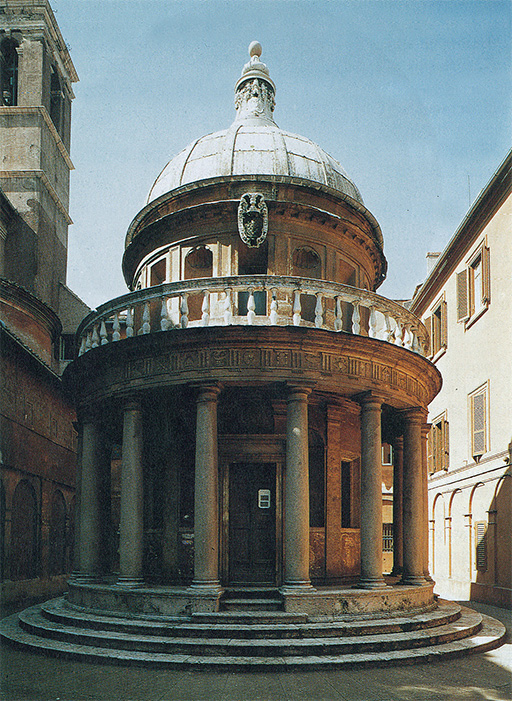
187 Donato Bramante, Il Tempietto, capilla de S. Pietro in Montorio, Roma, 1502. Capilla del alto Renacimiento.
A este maestro, pues, fue al que el Papa encargó la tarea de planear la nueva iglesia de San Pedro, en la inteligencia de que ésta debía convertirse en una verdadera maravilla de la cristiandad. Bramante estaba decidido a dejar a un lado la tradición occidental de un milenio, según la cual una iglesia de esta especie debía ser un recinto oblongo en el que las miradas de los fieles se orientasen hacia el altar mayor donde se decía la misa.
En su aspiración al equilibrio y la armonía que eran lo único digno del lugar, Bramante planeó una iglesia circular con un cerco de capillas uniformemente repartidas en torno al gigantesco recinto central. Este recinto tenía que ser coronado por una enorme cúpula que descansase sobre arcos colosales, algo que sabemos gracias a la medalla fundacional (ilustración 186). Bramante esperaba, dijo, combinar los efectos del mejor edificio antiguo, el Coliseo (ilustración 73), cuyas ruinas retadoras todavía impresionaban al que visitaba Roma, con los del Panteón (ilustración 75). Por un breve momento, la admiración por el arte de los antiguos y la ambición de crear algo inaudito predominaron sobre las conveniencias y las tradiciones veneradas a través del tiempo. Pero el plan de Bramante para la iglesia de San Pedro no estaba destinado a realizarse. El enorme edificio devoraba tanto dinero que, al tratar de reunir fondos suficientes, el Papa precipitó la crisis que trajo la Reforma. La práctica de vender indulgencias añadida a las contribuciones para la construcción de aquella iglesia llevó a Lutero, en Alemania, a la primera protesta pública. Incluso en el seno de la propia Iglesia católica aumentó la oposición contra el plan de Bramante y, con el paso de los años, la idea de una iglesia circular y simétrica fue abandonada. San Pedro, tal como lo conocemos hoy, tiene poco en común con el proyecto original, a excepción de sus gigantescas dimensiones.
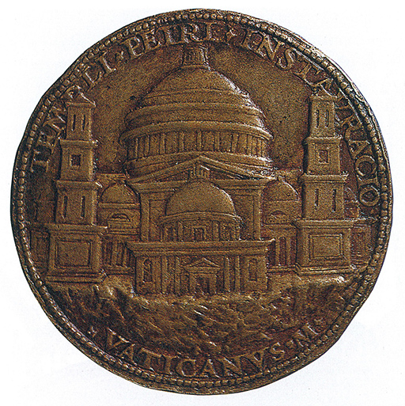
186 Caradosso, Medalla fundacional del nuevo San Pedro (que muestra el proyecto de Bramante con una cúpula inmensa), 1506. Bronce, 5,6 cm de diámetro; Museo Británico, Londres.
El espíritu de osadía que hizo posible el proyecto de Bramante para la iglesia de San Pedro es característico del período del alto Renacimiento, cuando, hacia 1500, produjo tantos de los mayores artistas del mundo. Para esos hombres nada parecía imposible, y ésta puede ser la razón de que a veces lograran lo aparentemente inconcebible. Una vez más fue Florencia la que dio nacimiento a algunas de las mentes rectoras de la gran época. Desde los días de Giotto, hacia 1300, y de los de Masaccio, a inicios de 1400, los artistas florentinos cultivaron su tradición con especial orgullo, siendo reconocida su excelencia por todas las personas de gusto. Ya veremos que casi todos los más grandes artistas partieron de una tradición firmemente establecida, y por ello no debemos olvidar a los humildes maestros en cuyos talleres aprendieron los elementos de su arte.
Leonardo da Vinci (1452-1519), el primero de esos famosos maestros, nació en una aldea toscana. Fue aprendiz en uno de los principales talleres florentinos, el del pintor y escultor Andrea del Verrocchio (1435-1488). La fama de este último era muy grande, tanto que la ciudad de Venecia le encargó el monumento a Bartolommeo Colleoni, uno de los generales al que debía gratitud por una serie de beneficios que había concedido más que por ninguna hazaña bélica en especial. La estatua ecuestre que hizo Verrocchio (ilustraciones 188 y 189) muestra que era un digno heredero de la tradición de Donatello. Estudió minuciosamente la anatomía del caballo, y vemos con qué gran precisión observó la posición de los músculos y las venas de la cara y el cuello de Colleoni. Pero lo más admirable de todo es la postura del jinete, que parece estar cabalgando al frente de sus tropas con expresión de osado desafío. En los últimos tiempos nos hemos familiarizado tanto con estas estatuas ecuestres en bronce, que han venido a poblar nuestras ciudades, representando a más o menos dignos emperadores, reyes, príncipes y generales, que necesitamos algún tiempo para darnos cuenta de la grandiosidad y la sencillez de la obra de Verrocchio. Estriban éstas en la precisa silueta que ofrece el grupo desde casi todas sus facetas, así como en la concentrada energía que parece animar al jinete armado sobre su montura.
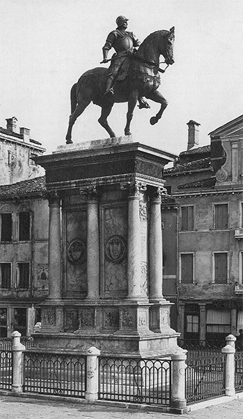
188 Andrea del Verrocchio, Bartolommeo Colleoni, 1479. Bronce, 395 cm de altura (caballo y jinete); plaza de los santos Juan y Pablo, Venecia.
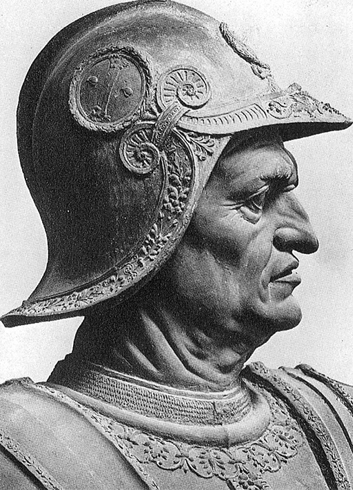
189 Detalle de la ilustración 188.
En un taller capaz de producir tales obras maestras, el joven Leonardo podía, ciertamente, aprender muchas cosas. Sería iniciado en los secretos técnicos de trabajar y fundir los metales, aprendería a preparar cuadros y estatuas cuidadosamente, procediendo al estudio de modelos desnudos y vestidos. Aprendería a estudiar las plantas y los animales curiosos para introducirlos en sus cuadros y recibiría una perfecta capacitación en las leyes ópticas de la perspectiva y en el empleo de los colores. En el caso de otro muchacho cualquiera con alguna vocación, una educación semejante habría sido suficiente para hacer de él un artista respetable, y muchos buenos pintores y escultores salieron, en efecto, del próspero taller de Verrocchio. Pero Leonardo era más, era un genio cuya poderosa inteligencia será siempre objeto de admiración y maravilla para los mortales corrientes. Sabemos algo de la condición y productividad de la mente de Leonardo, porque sus discípulos y admiradores conservaron cuidadosamente para nosotros sus apuntes y cuadernos de notas, miles de páginas cubiertas de escritos y dibujos, con extractos de los libros que leía Leonardo, y proyectos de obras que se propuso escribir. Cuanto más se leen estos papeles, menos puede comprenderse cómo un ser humano podía sobresalir en todos esos dominios diferentes y realizar importantes aportaciones en casi todos ellos. Tal vez una de las razones que lo hicieron posible fue que Leonardo era un artista florentino y no un intelectual. Él juzgaba que la misión del artista era explorar el mundo visible, tal como habían hecho sus predecesores, sólo que más cabalmente, con mayor intensidad y precisión. A él no le interesaba el saber libresco de los intelectuales. Al igual que Shakespeare, probablemente «supo poco latín y menos griego». En una época en la que los hombres ilustrados de las universidades se apoyaban en la autoridad de los admirados escritores antiguos, Leonardo, el pintor, no confiaba más que en lo que examinaba con sus propios ojos. Ante cualquier problema con el que se enfrentase, no consultaba a las autoridades, sino que intentaba un experimento para resolverlo por su cuenta. No existía nada en la naturaleza que no despertase su curiosidad y desafiara su inventiva. Exploró los secretos del cuerpo humano haciendo la disección de más de treinta cadáveres (ilustración 190). Fue uno de los primeros en sondear los misterios del desarrollo del niño en el seno materno; investigó las leyes del oleaje y de las corrientes marinas; pasó años observando y analizando el vuelo de los insectos y de los pájaros, lo que le ayudó a concebir una máquina voladora que estaba seguro de que un día se convertiría en realidad. Las formas de las peñas y de las nubes, las modificaciones producidas por la atmósfera sobre el color de los objetos distantes, las leyes que gobiernan el crecimiento de los árboles y de las plantas, la armonía de los sonidos, todo eso era objeto de sus incesantes investigaciones, las cuales habrían de constituir los cimientos de su arte.

190 Leonardo da Vinci, Estudios anatómicos (laringe y pierna), 1510. Plumilla, tinta marrón y aguada, con carboncillo sobre papel, 26 x 19,6 cm; Biblioteca Real, Castillo de Windsor.
Sus contemporáneos miraron a Leonardo como a un ser extraño y misterioso. Príncipes y generales deseaban utilizar a este mago prodigioso como ingeniero militar para construir fortificaciones y canales, así como armas y artificios nuevos. En tiempos de paz, les entretendría con juguetes mecánicos de su propia invención y con diseños para conseguir nuevos efectos en las representaciones escénicas. Fue admirado como gran artista y requerido como músico excelente, pero, a pesar de todo ello, pocas personas podían vislumbrar la importancia de sus ideas y la extensión de sus conocimientos. La causa de ello está en que Leonardo nunca publicó sus escritos y que muy pocos eran los que conocían la existencia de los mismos. Era zurdo y cuidó de escribir de derecha a izquierda, de modo que sus notas sólo pueden ser leídas con mediación de un espejo. Es posible que no quisiera que se divulgaran sus descubrimientos por temor a que se encontraran heréticas sus opiniones. Así, hallamos en sus escritos estas cinco palabras: «El sol no se mueve», que revelan que Leonardo se anticipó a las teorías de Copérnico que, posteriormente, pusieron en un compromiso a Galileo. Pero también es posible que emprendiera sus investigaciones y experimentos llevado simplemente por su curiosidad insaciable, y que, una vez que había resuelto un problema por sí mismo, perdiera su interés en él, porque había muchos otros misterios aún sin explorar.
Por encima de todo, es posible que Leonardo no ambicionara ser tenido por hombre de ciencia. Todas sus exploraciones de la naturaleza eran para él, ante todo y principalmente, medios de enriquecer su conocimiento del mundo visible, tal como lo precisaría para su arte. Consideró que, otorgándole a éste bases científicas, podría transformar su amado arte de la pintura de humilde artesanía en una ocupación honorable y noble. Para nosotros, esta preocupación acerca del rango social de los artistas puede ser difícil de comprender, pero ya hemos visto la importancia que tuvo para los hombres de la época. Tal vez si recordamos Sueño de una noche de verano, de Shakespeare, y los papeles que éste asigna a Snug, el carpintero, Bottom, el tejedor, y Snout, el calderero, comprendamos el fondo de este forcejeo. Aristóteles había codificado el esnobismo de la antigüedad clásica haciendo distinciones entre determinadas artes que eran compatibles con una educación liberal (la de las llamadas artes liberales, tales como la retórica, la lógica, la gramática o la geometría) y ocupaciones que entrañaban trabajar con las manos, que eran manuales y, por consiguiente, serviles, esto es, por debajo de la dignidad de un noble. Ambición de hombres como Leonardo fue mostrar que la pintura era un arte liberal, y que la labor manual que suponía no era más, en esencia, que el trabajo material de escribir en relación con la poesía. Es posible que este punto de vista afectara a menudo las relaciones de Leonardo con sus clientes. Tal vez no quiso ser considerado como propietario de un taller al que podía ir cualquiera a encargar un cuadro. En todo caso, sabemos que con frecuencia dejó Leonardo de cumplir encargos que se le hicieron. Comenzaría un cuadro y lo dejaría sin concluir a despecho de los requerimientos urgentes de quien se lo hubiese encargado. Además, declaraba insistentemente que era él quien tenía que decidir cuándo podía considerarse concluida una obra, y no la dejaba salir de sus manos si no estaba satisfecho de ella. No sorprende, pues, que sean escasas las obras que concluyó, y que sus contemporáneos lamentaran que este genio pareciese desperdiciar su tiempo trasladándose incesantemente de Florencia a Milán, de Milán a Florencia, y al servicio del notorio aventurero César Borgia; mas tarde a Roma, y, finalmente, a la corte del rey Francisco I de Francia, donde murió en 1519, más admirado que comprendido.
Por singular desventura, las pocas obras que Leonardo terminó en sus años de madurez han llegado a nosotros en muy mal estado de conservación. Así, cuando contemplamos lo que queda de la famosa pintura mural de Leonardo La última cena (ilustraciones 191 y 192), tenemos que esforzarnos en imaginar cómo pudo aparecer a los ojos de los monjes para los cuales fue realizada. La pintura cubre una de las paredes de un recinto oblongo, empleado como refectorio por los monjes del monasterio de Santa Maria delle Grazie de Milán. Hay que imaginarse el momento en que la pintura era descubierta y cuando, junto a las largas mesas de los monjes, aparecieron las imágenes del Cristo y sus apóstoles. Nunca se había mostrado con tanta fidelidad y tan lleno de vida el episodio sagrado. Era como si se hubiera añadido otro comedor al de ellos, en el cual La última cena había alcanzado forma tangible. ¡Con cuánta precisión caía la luz sobre la mesa confiriendo cuerpo y solidez a las figuras! Acaso lo primero que maravilló a los monjes fue el verismo de todos los detalles, los platos sobre el mantel y los pliegues de los ropajes. Entonces, como ahora, las obras de arte eran juzgadas a menudo por la gente culta en razón de su naturalismo. Pero ésta pudo haber sido tan sólo la reacción primera. Una vez que admiraron suficientemente su extraordinaria ilusión de realidad, los monjes considerarían de qué modo había presentado Leonardo el tema bíblico. No había nada en esta obra que se asemejase a las viejas representaciones del mismo asunto. En esas versiones tradicionales, se veía a los apóstoles sentados sosegadamente en torno a la mesa —solamente Judas quedaba separado del resto—, mientras el Cristo administraba serenamente el sacramento. La nueva representación era muy diferente de cualquiera de esos cuadros. Había algo dramático y angustioso en ella. Leonardo, como Giotto antes de él, había retornado al texto de las Escrituras, y se había esforzado en hacer visible el momento en que el Cristo pronuncia las palabras: «Yo os aseguro que uno de vosotros me entregará», y muy entristecidos, cada uno de los apóstoles le dice: «¿Acaso soy yo, Señor?» (Mateo 26, 21-22). El evangelio de san Juan añade que «Uno de sus discípulos, el que el Cristo amaba, estaba a la mesa al lado del Cristo. Simón Pedro le hace una seña y le dice: “Pregúntale de quién está hablando.” Él, recostándose sobre el pecho del Cristo, le dice: “Señor, ¿quién es?”» (Juan 13, 23-25). Es este preguntar y señalar el que introduce el movimiento en la escena. El Cristo acaba de pronunciar las trágicas palabras, y los que están a su lado retroceden asustados al escuchar la revelación. Algunos parecen hacer protestas de su inocencia y amor; otros, discutir gravemente acerca de lo que el Cristo puede haber dado a entender; y otros más, parecen mirarle ansiando una explicación de las palabras que acaba de pronunciar. San Pedro, el más impetuoso de todos, se precipita hacia san Juan, que está sentado a la derecha del Cristo. Como si murmurase algo al oído de san Juan, inadvertidamente empuja hacia adelante a Judas. Éste no se halla separado del resto, y sin embargo parece aislado. Él es el único que no gesticula ni pregunta; inclinado hacia adelante inquiere con la mirada algún indicio de sospecha o de ira, en contraste dramático con la figura del Cristo, serena y resignada en medio de la agitación. Nos gustaría saber cuánto tardarían los primeros espectadores en darse cuenta del arte consumado con que se ordenó todo este movimiento dramático. A pesar de la agitación causada por las palabras del Cristo, no hay nada caótico en el cuadro. Los doce apóstoles parecen formar con toda naturalidad cuatro grupos de tres, relacionados unos con otros mediante gestos y movimientos. Hay tanto orden en esta variedad, y tanta variedad en este orden, que no se acaba nunca de admirar el juego armónico y la correspondencia entre unos movimientos y otros. Tal vez sólo podamos apreciar el logro de Leonardo en esta composición si consideramos de nuevo el problema estudiado al describir el san Sebastián de Pollaiuolo (ilustración 171). Recordemos cómo lucharon los artistas de aquella generación para conciliar las exigencias del realismo con las del esquema del dibujo. Recordemos cuán rígida y artificiosa nos pareció la solución de Pollaiuolo a este problema. Leonardo, que era un poco más joven que Pollaiuolo, lo resolvió con aparente facilidad. Si se olvida por un momento lo que la escena representa, se puede disfrutar con la contemplación del hermoso esquema formado por las figuras. La composición parece poseer la armonía y el natural equilibrio que caracterizó las pinturas góticas, y que artistas como Rogier van der Weyden y Botticelli, cada uno a su manera, trataron de recuperar para el arte. Pero Leonardo no juzgó necesario sacrificar la corrección del dibujo, o la exacta observación, a las exigencias de un esquema satisfactorio. Si se olvida la belleza de la composición, nos sentimos enfrentados de pronto con un trozo de la realidad tan palpitante y sorprendente como los que hemos visto en las obras de Masaccio o Donatello. Y ni siquiera este acierto agota la verdadera grandeza de la obra, pues más allá de aspectos técnicos, como la composición y el dibujo, tenemos que admirar la profunda penetración de Leonardo en lo que respecta a la conducta y las reacciones humanas, así como a la poderosa imaginación que le permitió situar la escena ante nuestros ojos. Un testigo ocular nos refiere que vio a menudo a Leonardo trabajando en La última cena; afirma que se subía al andamio y podía estarse allí días enteros con los brazos cruzados, sin hacer otra cosa que examinar lo que había hecho, antes de dar otra pincelada. Es el fruto de este pensar lo que nos ha legado, y aun en su estado ruinoso, La última cena sigue siendo uno de los grandes milagros debidos al genio del hombre.
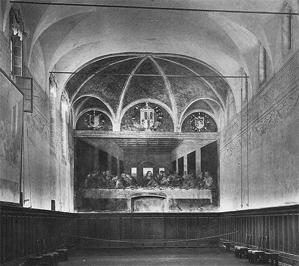
191 Refectorio del monasterio de Santa Maria delle Grazie, Milán, con La última cena, de Leonardo da Vinci, en la pared del fondo.
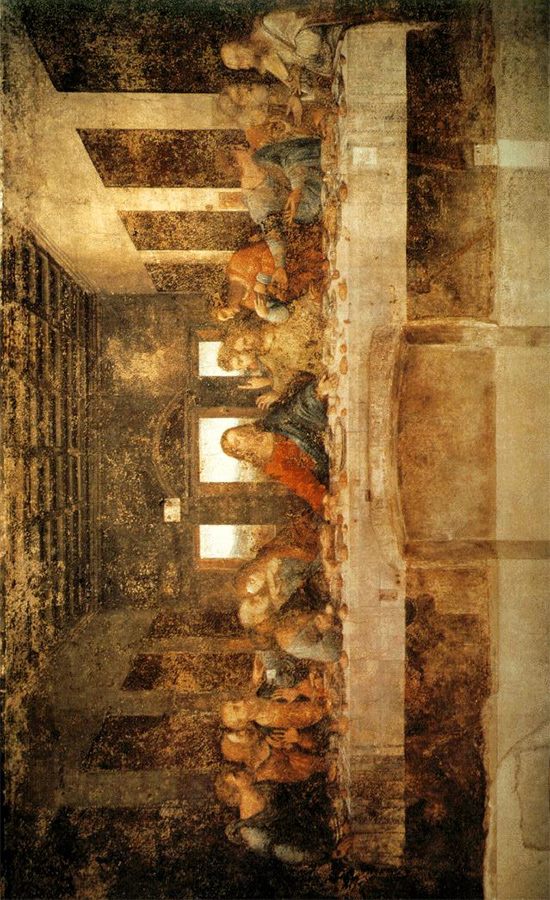
192 Leonardo da Vinci, La última cena, 1495-1498. Temple sobre yeso, 460 x 880 cm; refectorio del monasterio de Santa Maria delle Grazie, Milán.
Hay otra obra de Leonardo que quizá sea más famosa que La última cena: el retrato de una dama florentina cuyo nombre era Lisa, Mona Lisa (ilustración 193). Fama tan grande como la de Mona Lisa de Leonardo no es una verdadera bendición para una obra de arte. Acabamos por hastiarnos de verla tan frecuentemente en las tarjetas postales, e incluso en tantos anuncios, y nos resulta difícil considerarla como obra de un hombre de carne y hueso en la que éste representó a otra persona también de verdad. Pero merece la pena que nos olvidemos de lo que sabemos, o creemos saber acerca del cuadro, y lo contemplemos como si fuésemos las primeras personas que pusieran sus ojos en él. Lo que al pronto nos sorprende es el grado asombroso en que Mona Lisa parece vivir. Realmente se diría que nos observa y que piensa por sí misma. Como un ser vivo, parece cambiar ante nuestros ojos y mirar de manera distinta cada vez que volvemos a ella. Incluso ante las fotografías del cuadro experimentamos esta extraña sensación; pero frente al original, en el Museo del Louvre de París, el hecho es aún más extraordinario. Unas veces parece reírse de nosotros; otras, cuando volvemos a mirarla nos parece advertir cierta amargura en su sonrisa. Todo esto resulta un tanto misterioso, y así es, realmente, el efecto propio de toda gran obra de arte. Sin embargo, Leonardo pensó conscientemente en cómo conseguir ese efecto y por qué medios. El gran observador de la naturaleza supo más acerca del modo de emplear sus ojos que cualquiera de los que vivieron antes de él. Vio claramente un problema que la conquista de la naturaleza había planteado a los artistas; un problema no menos intrincado que el de combinar correctamente el dibujo con la composición armónica. Las grandes obras de los maestros del Quattrocento italiano que, siguiendo la vía abierta por Masaccio, tenían algo en común: sus figuras parecían algo rígidas y esquinadas, casi de madera. Lo curioso es que, evidentemente, no era responsable de este efecto la falta de paciencia o de conocimientos. Nadie más paciente en sus imitaciones de la naturaleza que Van Eyck (ilustración 158); nadie que supiera más acerca de la corrección en el dibujo y la perspectiva que Mantegna (ilustración 169). Y sin embargo, a pesar de toda la grandiosidad y lo sugerente de sus representaciones de la naturaleza, sus figuras más parecen estatuas que seres vivos. La razón de ello puede proceder de que, cuanto más conscientemente copiamos una figura, línea a línea y detalle por detalle, menos podemos imaginarnos cómo se mueve y respira realmente. Parece como si, de pronto, el pintor hubiera arrojado un espejo sobre ella y la hubiera encerrado allí para siempre, como ocurre en el cuento de La bella durmiente. Los artistas intentaron vencer esta dificultad de diversos modos. Botticelli, por ejemplo (ilustración 172), trató de realzar en sus cuadros la ondulación de los cabellos y los flotantes adornos de sus figuras, para hacerlas menos rígidas de contornos. Pero sólo Leonardo encontró la verdadera solución al problema. El pintor debía abandonar al espectador algo por adivinar. Si los contornos no estaban tan estrictamente dibujados, si la forma era dejada con cierta vaguedad, como si desapareciera en la sombra, la impresión de dureza y rigidez sería evitada. Esta es la famosa invención de Leonardo que los italianos denominan sfumato, el contorno borroso y los colores suavizados que permiten fundir una sombra con otra y que siempre dejan algo a nuestra imaginación.
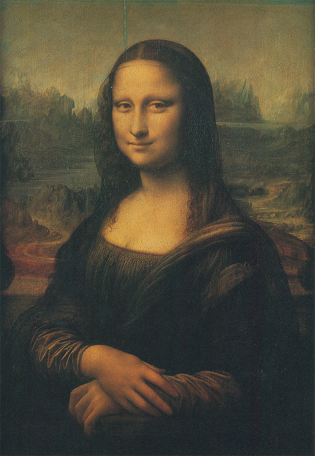
193 Leonardo da Vinci, Mona Lisa, h. 1502. Óleo sobre tabla, 77 x 53 cm; Museo del Louvre, París.
Si volvemos ahora a contemplar Mona Lisa (ilustración 194), comprenderemos algo de su misteriosa apariencia. Vemos que Leonardo ha empleado los recursos del sfumato con deliberación extrema. Todo aquel que ha tratado de dibujar o bosquejar un rostro sabe que lo que nosotros llamamos su expresión reside principalmente en dos rasgos: las comisuras de los labios y los extremos de los ojos. Precisamente son esas partes las que Leonardo dejó deliberadamente en lo incierto, haciendo que se fundan con sombras suaves. Por este motivo nunca llegamos a saber con certeza cómo nos mira realmente Mona Lisa. Su expresión siempre parece escapársenos. No es sólo, claro está, tal vaguedad la que produce este efecto. Hay motivos más profundos. Leonardo optó por algo muy atrevido, a lo que tal vez sólo podía arriesgarse un pintor de su consumada maestría. Si observamos atentamente el cuadro, veremos que los dos lados no coinciden exactamente entre sí. Esto se halla más de manifiesto en el paisaje fantástico del fondo. El horizonte en la parte izquierda parece hallarse más alto que en la derecha. En consecuencia, cuando centramos nuestras miradas sobre el lado izquierdo del cuadro, la mujer parece más alta o más erguida que si tomamos como centro la derecha. Y su rostro, asimismo, parece modificarse con este cambio de posición, porque también en este caso las dos partes no se corresponden con exactitud. Pero con todos estos recursos artificiosos, Leonardo pudo haber producido un habilidoso juego de manos más que una gran obra de arte si no hubiera sabido exactamente hasta dónde podía llegar, y si no hubiera contrabalanceado esta atrevida desviación de la naturaleza mediante una representación maravillosa del cuerpo viviente. Véase de qué modo está modelada la mano, o cómo están hechas las mangas con sus diminutas arrugas. Leonardo podía ser tan obstinado como cualquiera de sus predecesores en la paciente observación de la naturaleza. Pero ya no era un mero y fiel servidor de ella. Desde épocas remotas, en un lejano pasado, los retratos se miraron con respeto por creerse que, al conservar el artista la apariencia visible, conservaba también el alma de la persona retratada. Ahora, el gran hombre de ciencia, Leonardo, convertía en realidad algo de los sueños y temores de esos primeros hacedores de imágenes. Mostró que conocía el hechizo de infundir vida a los colores esparcidos con sus pinceles prodigiosos.
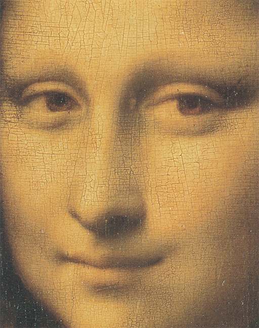
194 Detalle de la ilustración 193.
El segundo gran florentino cuya obra hizo tan famoso al arte italiano del siglo XVI (Cinquecento) fue Miguel Ángel Buonarroti (1475-1564). Miguel Ángel era veintitrés años más joven que Leonardo y le sobrevivió cuarenta y cinco. En su larga vida fue testigo de un completo cambio respecto a la situación del artista. Hasta cierto punto fue él quien generó este cambio. En su juventud, Miguel Ángel recibió una formación como la de cualquier otro artesano. Cuando tenía trece años inició su aprendizaje, que duraría tres, en el activo taller de uno de los principales maestros de la Florencia de finales del Quattrocento, el pintor Domenico Ghirlandaio (1449-1494). Ghirlandaio fue uno de esos maestros cuyas obras apreciamos más por la fidelidad con la que reflejan el colorido de la época que por ningún otro mérito sobresaliente. Supo cómo expresar agradablemente los temas religiosos, como si tales asuntos acabasen de suceder entre los ricos ciudadanos florentinos que eran sus clientes. La ilustración 195 representa el nacimiento de la Virgen, y en ella vemos a las amistades de su madre, santa Ana, viniendo a visitarla y felicitarla. Nos introducimos en una elegante habitación de finales del siglo XV y presenciamos una reverente visita de las damas acomodadas de la sociedad. Ghirlandaio demuestra que sabía distribuir diestramente los grupos y halagar los ojos. Y que compartía las inclinaciones de sus contemporáneos respecto a los temas del arte antiguo, pues ponía buen cuidado en pintar un relieve de niños danzantes, a la manera clásica, en el fondo de la habitación.
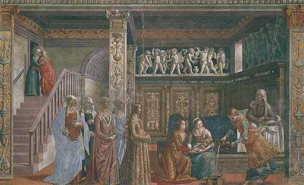
195 Domenico Ghirlandaio, El nacimiento de la Virgen, 1491. Fresco; iglesia de Santa Maria Novella, Florencia.
En este taller, el joven Miguel Ángel podía aprender ciertamente todos los recursos técnicos del oficio, una sólida técnica para la pintura de frescos, y adiestrarse perfectamente en el arte del dibujo. Pero, por lo que sabemos, Miguel Ángel no tenía en mucho los días que pasó en el taller de este acreditado pintor. Sus ideas acerca del arte eran distintas. En lugar de adquirir la fácil manera de Ghirlandaio, se dedicó a estudiar las obras de los grandes maestros del pasado, de Giotto, Masaccio, Donatello, y de los escultores griegos y romanos cuyas obras podía contemplar en la colección de los Médicis. Trató de penetrar en los secretos de los escultores antiguos, que supieron representar la belleza del cuerpo humano en movimiento, con todos sus músculos y tendones. Al igual que Leonardo, no se contentaba con aprender las leyes de la anatomía de segunda mano, esto es, a través de la escultura antigua. Investigó por sí mismo la anatomía humana, diseccionó cuerpos, y dibujó, tomando modelos, hasta que la figura humana no pareciera ofrecerle secreto alguno. Pero a diferencia de Leonardo, para quien el hombre era sólo uno de los muchos fascinantes arcanos de la naturaleza, Miguel Ángel se esforzó con increíble uniformidad de propósito en dominar este problema humano por completo. Su poder de concentración y la retentiva de su memoria debieron ser tan extraordinarios que pronto no hubo actitud ni movimiento que encontrara difícil dibujar. De hecho, las dificultades no hacían otra cosa que atraerle. Actitudes y posiciones que muchos grandes artistas del Quattrocento podían haber dudado en introducir en sus cuadros, por temor de fracasar al representarlos ajustadamente, sólo estimularon su ambición artística, y pronto se rumoreó que este joven artista no sólo había igualado a los renombrados maestros de la antigüedad clásica sino que realmente los había sobrepasado. Hoy, cuando los artistas jóvenes pasan varios años en la escuela de arte estudiando anatomía, el desnudo, la perspectiva y todos los recursos del arte del dibujo, cuando muchos cronistas deportivos o cartelistas modestos pueden haber adquirido facilidad en dibujar figuras humanas desde todos los ángulos, puede resultarnos difícil comprender la enorme admiración que el saber y la consumada destreza de Miguel Ángel despertaron en su época. A los treinta años era universalmente conocido como uno de los maestros más destacados de la época, siendo equiparado su estilo al genio de Leonardo. La ciudad de Florencia le honró encargándole a él, a la par que a Leonardo, la pintura de un episodio de la historia florentina sobre una pared de la sala de juntas principal del Ayuntamiento. Fue un momento de gran intensidad en la historia del arte aquel en que estos dos grandes genios contendieron por el triunfo, y toda Florencia aguardaba con impaciencia el desarrollo de sus apuntes y bocetos. Desgraciadamente, las obras no se concluyeron nunca. En 1506, Leonardo regresó a Milán y Miguel Ángel recibió un encargo que debió halagar más aún sus entusiasmos. El papa Julio II deseaba su presencia en Roma con el fin de que erigiera un mausoleo para él que fuera digno del jefe de la cristiandad. Tenemos noticias de los ambiciosos planes de este papa inteligente y duro, y no es difícil imaginar cuán fascinado debió quedar Miguel Ángel al tener que trabajar para un hombre que poseía los medios y la voluntad de llevar a cabo proyectos atrevidos. Con la autorización del papa, se puso inmediatamente en camino hacia las famosas canteras de mármol de Carrara con el fin de escoger allí los bloques con que esculpir el gigantesco mausoleo. El joven artista quedó arrobado ante la vista de todas aquellas rocas de mármol que parecían esperar su cincel para convertirse en estatuas como el mundo no había visto jamás. Permaneció durante más de seis meses en las canteras, comprando, eligiendo y rechazando, con la mente en ebullición constante de imágenes. Deseaba liberar las figuras de las piedras en las cuales dormían. Pero cuando regresó y puso manos a la obra, descubrió de pronto que el entusiasmo del Papa por la gran empresa se había manifiestamente enfriado. Sabemos hoy que una de las principales razones de la perplejidad del Papa fue que su proyecto para un mausoleo entró en conflicto con otro, suyo también, pero que aún le apasionaba más: el de una nueva basílica de San Pedro. El mausoleo estaba destinado, primitivamente, a alojarse en el edificio antiguo; pero si éste tenía que ser derribado, ¿dónde albergar el monumento funerario? Miguel Ángel, en su profunda contrariedad, sospechó que deberían existir otras causas de por medio. Imaginó intrigas, y hasta temió que sus rivales —sobre todo Bramante, el arquitecto de la nueva basílica de San Pedro— quisieran envenenarle. En un rapto de cólera y de temor abandonó Roma por Florencia, y escribió una carta altanera al Papa diciéndole que si quería algo de él podía ir allí a buscarle.
Lo más notable en este incidente es que el Papa no perdió su ecuanimidad, sino que inició negociaciones formales con el principal dignatario de la ciudad de Florencia para que persuadiera al joven escultor y le hiciera regresar. Todos los interesados en el asunto parecían estar de acuerdo en que los movimientos y proyectos de este joven artista eran tan importantes como cualquier delicado asunto de Estado. Los florentinos llegaron a temer incluso que el Papa pudiera volverse contra ellos si le seguían dando asilo. El alto dignatario de la ciudad de Florencia convenció por consiguiente a Miguel Ángel de que volviera al servicio de Julio II, y le dio una carta de recomendación en la cual decía que su arte no tenía parangón en toda Italia, ni acaso en todo el orbe, y que sólo con tratarle amablemente realizaría cosas que «asombrarían al mundo entero». Por una vez, una nota diplomática declaró la verdad. Cuando Miguel Ángel volvió a Roma, el Papa le hizo aceptar otro encargo. Había una capilla en el Vaticano que, mandada construir por Sixto IV, tenía el nombre de Capilla Sixtina (ilustración 196). Las paredes de esta capilla habían sido decoradas por los pintores más famosos de la generación anterior: Botticelli, Ghirlandaio y otros. Pero la bóveda aún estaba vacía. El Papa sugirió que la pintara Miguel Ángel. Éste hizo cuanto pudo para eludir el encargo. Dijo que él no era en realidad pintor, sino escultor. Estaba convencido de que esta ingrata tarea había recaído sobre él como consecuencia de las intrigas de sus enemigos. Dado que el Papa insistía, empezó a realizar un modesto boceto de doce apóstoles en nichos, y a encargar ayudantes florentinos que tendrían que auxiliarle en la obra. Pero de pronto se encerró en la capilla, no dejó que nadie se le acercara y se puso a trabajar a solas en una obra que ha seguido, en realidad, «asombrando al mundo entero» desde el instante en que fue mostrada.
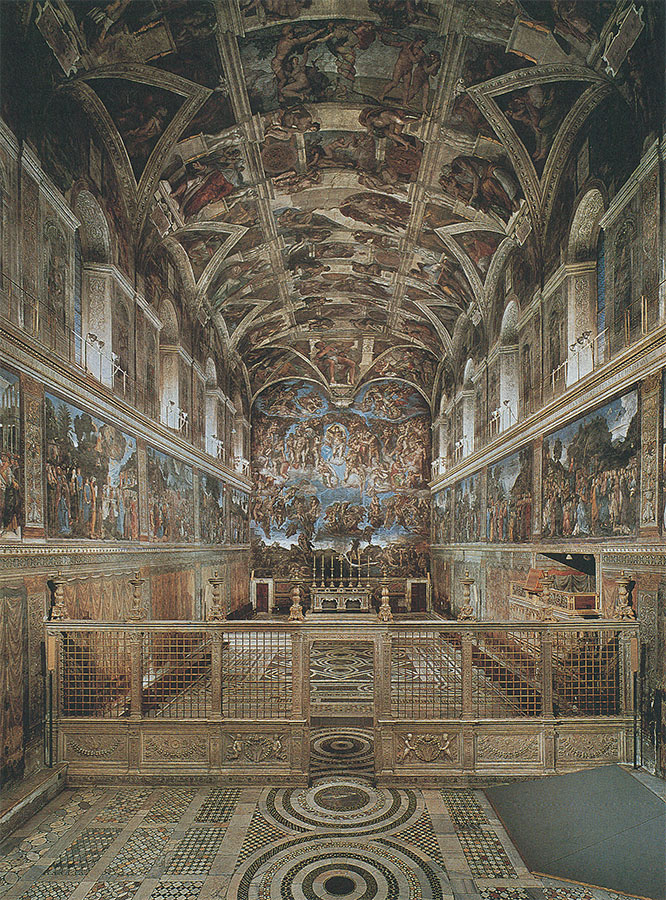
196 Capilla Sixtina, Vaticano. Vista general del interior antes de la limpieza efectuada en la década de 1980.
Es muy difícil para un mortal corriente imaginar cómo fue posible que un ser humano realizara lo que Miguel Ángel creó en cuatro años de labor solitaria sobre el andamiaje de la capilla papal (ilustración 198). El mero esfuerzo físico de pintar este enorme fresco sobre el techo de la capilla, de preparar y esbozar detalladamente las escenas y transferirlas a la pared, es fantástico. Miguel Ángel tuvo que tumbarse de espaldas y pintar mirando hacia arriba. En efecto, llegó a habituarse tanto a esta forzada posición que hasta cuando recibía una carta durante esta época tenía que ponérsela delante y echar la cabeza hacia atrás para leerla. Pero el trabajo físico de un hombre cubriendo este ingente espacio sin ayuda de nadie no es nada comparado con el esfuerzo intelectual y artístico. La riqueza de encontrar siempre nuevas creaciones, la sostenida maestría en la ejecución de cada detalle, y, sobre todo, la grandiosidad de las visiones que Miguel Ángel reveló a los que vinieron tras él, han dado a la humanidad una idea completamente nueva del poder del genio.
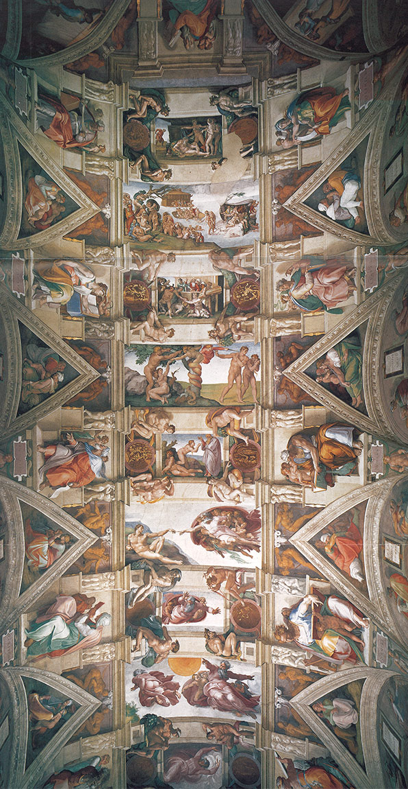
198 Miguel Ángel, Techo de la Capilla Sixtina, 1508-1512. Fresco, 13,7 x 39 m; Vaticano.
Se ven a menudo reproducciones de detalles de esta obra gigantesca, pero nunca se contemplarán lo suficiente. Sin embargo, la impresión que produce este conjunto, cuando se entra en la capilla, es aun muy distinta a la suma de todas las fotografías que puedan haberse visto. La capilla parece una sala de juntas muy espaciosa y alta, con una leve bóveda. En la parte más alta de las paredes vemos una franja de pinturas con temas relativos a Moisés y al Cristo, a la manera tradicional de los predecesores de Miguel Ángel. Pero cuando miramos hacia arriba nos parece introducirnos en un mundo distinto. Es un cosmos de dimensiones sobrehumanas. En la bóveda que se eleva entre los cinco ventanales a cada lado de la capilla, Miguel Ángel colocó imágenes gigantescas de los profetas del Antiguo Testamento que hablaron a los judíos de la venida del Mesías, alternando con figuras de las sibilas, las que, según una antigua tradición, predijeron a los gentiles la llegada del Cristo. Los pintó como hombres y mujeres poderosos, sentados en profunda meditación, leyendo, escribiendo, argumentando, o como si estuvieran escuchando una voz interior. Entre estas hileras de figuras mayores que el natural, en el techo propiamente dicho, pintó el tema de la creación y el de Noé. Pero como esta intensa tarea no satisfizo su ímpetu de crear siempre nuevas imágenes, llenó los intersticios entre esas pinturas con una abrumadora muchedumbre de figuras, algunas a manera de estatuas, otras como jóvenes palpitantes de belleza sobrenatural, sosteniendo festones y medallones, con nuevos temas en su interior. Y esto, todavía, no es más que la pieza central. Aparte, en las bovedillas y debajo de ellas pintó una interminable sucesión de hombres y mujeres infinitamente variados: los antepasados del Cristo tal como aparecen enumerados en los evangelios.
Cuando vemos esta riqueza de figuras en una reproducción fotográfica, podemos sospechar que acaso el techo parezca desequilibrado y superabundante. Una de las grandes sorpresas, al entrar en la Capilla Sixtina, es hallar cuán armonioso y sencillo nos parece todo si lo contemplamos simplemente como una soberbia obra decorativa; y cuán precisa es la disposición del conjunto. Desde que éste fue limpiado de sus múltiples capas de hollín de las velas y del polvo en la década de 1980, los colores se han revelado fuertes y luminosos, lo cual era una necesidad si el techo tenía que ser visible en una capilla cuyas ventanas son tan escasas y estrechas. (Pocas veces tienen esto en cuenta las personas que han admirado las pinturas iluminadas con la fuerte luz eléctrica que actualmente se proyecta sobre el techo.)
Lo que se muestra en la ilustración 197 no es más que un pequeño fragmento de la obra total, un sector, por así decirlo, de la bóveda, que ejemplifica la manera en que Miguel Ángel distribuye las figuras flanqueando las escenas de la creación. A un lado está el profeta Daniel con un libro enorme que sostiene sobre sus rodillas con la ayuda de un niño, y volviéndose hacia un lado para tomar una nota de lo que acaba de leer. Junto a él está la sibila cumea escudriñando su libro. En el lado opuesto está la sibila persa, una anciana con un traje oriental que sostiene un libro cerca de sus ojos, igualmente enfrascada en el examen de los textos sagrados, y el profeta del Antiguo Testamento Ezequiel, quien se vuelve violentamente como si estuviera manteniendo una discusión. Los asientos de mármol que ocupan están adornados con estatuas de niños jugando, y por encima de ellos, uno a cada lado, hay dos desnudos a punto de colgar, alegremente, un medallón en el techo. En los tímpanos triangulares de los arcos representó Miguel Ángel a los antepasados del Cristo, según se los menciona en la Biblia, coronados por otros cuerpos contorsionados. En estos asombrosos desnudos se despliega toda la maestría de Miguel Ángel al dibujar el cuerpo humano en cualquier posición y desde cualquier ángulo. Son jóvenes atletas maravillosamente musculados, volviéndose en cualquier dirección imaginable, pero ingeniándose siempre para quedar airosos. Hay lo menos veinte de ellos en el techo; si uno fue ejecutado con maestría, el siguiente habría de superarlo; y apenas cabe dudar de que muchas de las ideas que habrían nacido a la vida en los mármoles de Carrara se agolparon en la mente de Miguel Ángel mientras pintó el techo de la Capilla Sixtina. Puede verse la extraordinaria maestría que poseyó y cómo su contrariedad y su cólera al verse obligado a no proseguir trabajando en su materia preferida le espoleó aún más a demostrar a sus enemigos, verdaderos o imaginarios, que si ellos le comprometían a pintar, ¡ya verían!
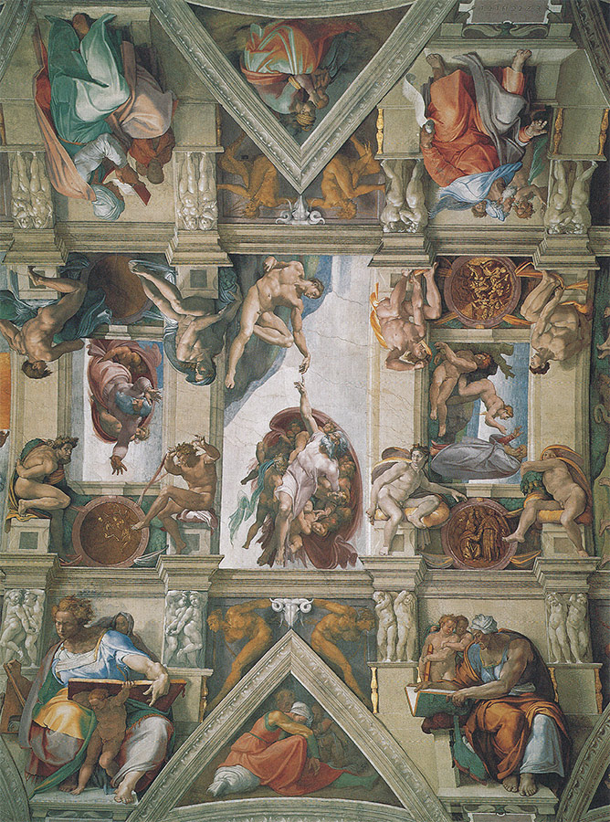
197 Miguel Ángel Detalle del techo de la Capilla Sixtina.
Sabemos cuán minuciosamente estudiaba Miguel Ángel cada detalle, y con cuánto cuidado preparaba en el dibujo cada figura. La ilustración 199 muestra una página de su cuaderno de apuntes sobre la que ha estudiado las formas de un modelo para una de las sibilas. Vemos el juego de los músculos, tal como nadie los vio ni representó desde los maestros griegos. Pero si probó ser un virtuoso inigualable en esos famosos desnudos, demostró algo infinitamente superior en la ilustración de los temas bíblicos que forman el centro de la composición. Allí vemos al Dios haciendo surgir, con poderosos ademanes, las plantas, los cuerpos celestes, la vida animal y al hombre.
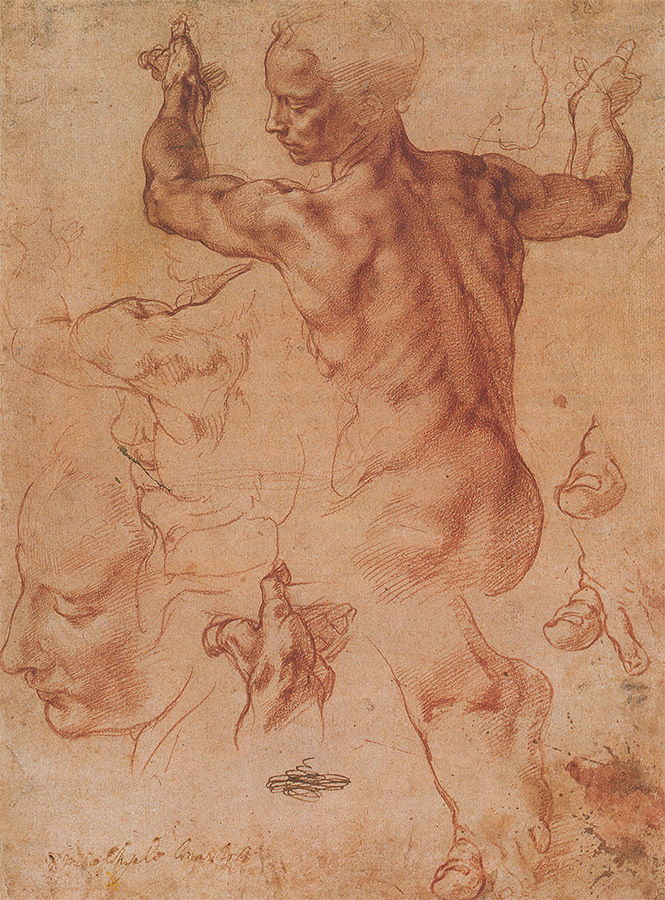
199 Miguel Ángel, Estudio para la sibila libia (del techo de la Capilla Sixtina), h. 1510. Sanguina sobre papel, 28,9 x 21,4 cm; Museo Metropolitano de Arte, Nueva York.
No resulta exagerado decir que la representación del Dios Padre —tal como vivió en las mentes, de generación en generación, no sólo de artistas, sino de personas humildes que quizá nunca escucharon el nombre de Miguel Ángel— se formó y modeló a partir de la influencia directa o indirecta de estas grandes visiones en las que Miguel Ángel ilustró el acto de la creación. Quizá la más famosa y sorprendente sea la creación de Adán en uno de los grandes recuadros (ilustración 200). Los artistas anteriores a Miguel Ángel ya habían pintado a Adán yaciendo en tierra y siendo llamado a la vida por un simple toque de la mano del Dios, pero nadie había llegado a expresar la grandeza del misterio de la creación con tanta fuerza y tan sencillamente. No hay nada en esta pintura que distraiga la atención del tema central. Adán está tumbado en tierra con todo el vigor y la belleza que corresponden al primer hombre; por el otro lado se acerca el Dios Padre, llevado y sostenido por sus ángeles, envuelto en un manto majestuoso hinchado como una vela y sugiriendo la facilidad con que flota en el vacío. Cuando extiende su mano, no sólo toca el dedo de Adán, sino que casi podemos ver al primer hombre despertando de un sueño profundo para contemplar a su hacedor. Uno de los mayores milagros del arte es éste de cómo llegó Miguel Ángel a hacer del toque de la mano divina el centro y punto culminante de la pintura, y cómo nos hizo ver la idea de omnipotencia mediante la facilidad y el poder de su ademán creador.
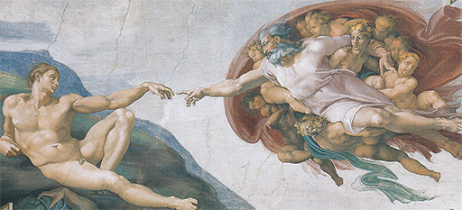
200 Miguel Ángel, La creación de Adán. Detalle de la ilustración 198.
Apenas había concluido Miguel Ángel su gran obra en la Capilla Sixtina, en 1512, cuando afanosamente se volvió a sus bloques de mármol para proseguir con el mausoleo de Julio II. Se propuso adornarlo con estatuas de cautivos, tal como había observado en los monumentos funerarios romanos, aunque es posible que pensara dar a estas figuras un sentido simbólico. Una de ellas es El esclavo moribundo de la ilustración 201. Si alguien pudo llegar a creer que, tras el tremendo esfuerzo realizado en la Capilla Sixtina, la imaginación de Miguel Ángel se habría secado, pronto advertiría su error. Cuando volvió a enfrentarse con sus preciadas materias, su poderío pareció agigantarse más aún. Mientras que en Adán Miguel Ángel representó el momento en que la vida entra en el hermoso cuerpo de un joven lleno de vigor, ahora, en El esclavo moribundo, eligió el instante en que la vida huye y el cuerpo es entregado a las leyes de la materia inerte. Hay una indecible belleza en este último momento de distensión total y de descanso de la lucha por la vida, en esta actitud de laxitud y resignación. Es difícil darse cuenta de que esta obra es una estatua de piedra fría y sin vida cuando nos hallamos frente a ella en el Louvre de París. Parece moverse ante nuestros ojos, y, sin embargo, está quieta. Tal efecto es, sin duda, el que Miguel Ángel se propuso conseguir. Uno de los secretos de su arte que más han maravillado siempre es que cuanto más agita y contorsiona a sus figuras en violentos movimientos, más firme, sólido y sencillo resulta su contorno. La razón de ello estriba en que, desde un principio, Miguel Ángel trató siempre de concebir figuras como si se hallaran contenidas ya en el bloque de mármol en el que trabajaba; su tarea en cuanto que escultor, como él mismo dijo, no era sino la de quitarle al bloque lo que le sobraba, es decir, suprimir de él lo necesario hasta que aparecieran esas figuras contenidas en sus entrañas. De este modo, la simple forma de un bloque quedaba reflejada en el contorno de las esculturas, y éstas, encajadas dentro de un lúcido esquema por mucho movimiento que el cuerpo pudiera tener.
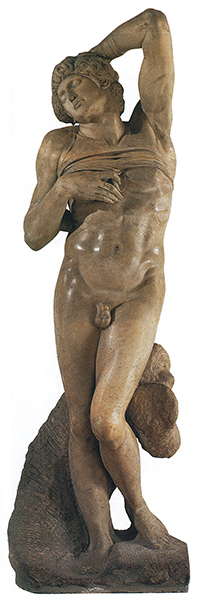
201 Miguel Ángel, El esclavo moribundo, h. 1513. Mármol, 229 cm de altura; Museo Louvre, París.
Si Miguel Ángel era ya famoso cuando Julio II le hizo ir a Roma, su fama al terminar estas obras fue tal que jamás gozó de otra semejante ningún artista. Pero esta extraordinaria nombradía empezó a hacérsele enojosa, puesto que no le permitía concluir nunca el sueño de su juventud: el mausoleo de Julio II. Cuando éste murió, otro papa requirió los servicios del más famoso de los artistas de su tiempo; y cada papa sucesivo parecía más afanoso que su antecesor en dejar su nombre ligado al de Miguel Ángel. Pero mientras príncipes y papas se sobrepujaban unos a otros en asegurarse los servicios del anciano maestro, éste parecía concentrarse cada vez más en sí y volverse más exigente en sus opiniones. Los poemas que escribió muestran que se hallaba obsesionado por las dudas acerca de si su arte habría sido pecado, mientras que sus cartas evidencian que cuanto más aumentaba en la estimación del mundo, más amargado y extraño se volvía. Y no sólo fue admirado sino también temido, no perdonando a nadie, ni a grandes ni a pequeños. No hay duda de que se daba cuenta de su posición social, tan distinta de cuanto recordaba de los días de su juventud. Cuando contaba setenta y siete años recriminó en una ocasión a un connacional suyo por haberle dirigido una carta «Al escultor Miguel Ángel». «Decidle —escribió— que no dirija sus cartas al escultor Miguel Ángel, pues aquí solamente se me conoce como Miguel Ángel Buonarroti… Nunca he sido pintor ni escultor en el sentido de tener un taller…; aunque he servido a los papas, lo hice por verme obligado a ello.»
Lo que mejor demuestra cuán sincero fue en su sentimiento de orgullo e independencia es el hecho de que rechazara el pago de su última gran obra, que le ocupó en su senectud: la terminación de la empresa de su, en un tiempo, enemigo Bramante, la coronación de la cúpula de San Pedro. El anciano maestro consideraba este trabajo, realizado en la primera iglesia de la cristiandad, como un servicio a la mayor gloria del Dios, que no debía mancillarse obteniendo de él un provecho mundano. Esta cúpula, elevándose sobre la ciudad de Roma, sostenida por un cerco de delgadas columnas, de clara y majestuosa silueta, constituye un digno monumento al espíritu de este artista singular, al que sus contemporáneos dieron el apodo de Divino.
En 1504, época en la que Miguel Ángel y Leonardo rivalizaban entre sí en Florencia, un joven pintor llegó procedente de la pequeña ciudad de Urbino, en la Umbria. Era Raffaello Sanzio o Santi, a quien conocemos como Rafael (1483-1520), que había realizado obras prometedoras en el taller del jefe de escuela de su región umbria, Pietro Perugino (1446-1523). Al igual que el maestro de Miguel Ángel, Ghirlandaio, y el maestro de Leonardo, Verrocchio, el de Rafael, Perugino, pertenecía a la generación de aquellos acreditadísimos artistas que necesitaban gran cantidad de hábiles aprendices para que les ayudaran a sacar adelante los muchos encargos que recibían. Perugino fue uno de tales maestros, y su manera suave y devota en los cuadros de altar le hacía ser respetado por todos. Los problemas en que se debatieron a brazo partido y celosamente los artistas primitivos del Quattrocento ya no le ofrecían a él muchas dificultades. Algunas de sus obras más admiradas muestran que supo conseguir el sentido de la profundidad sin romper la armonía del diseño, y que aprendió a manejar el sfumato de Leonardo, así como a evitar que sus personajes tuvieran una apariencia rígida y tosca. La ilustración 202 es un cuadro de altar dedicado a san Bernardo. El santo levanta la vista de su libro para mirar a la Virgen que se halla ante él. La composición no puede ser más sencilla, y, sin embargo, no hay nada rígido ni forzado en su casi geométrica disposición. Los personajes están repartidos de manera que formen una composición armónica en la que cada cual se mueva con serenidad y holgura. Es cierto que Perugino consiguió esta bella armonía a costa de alguna otra cosa: sacrificó aquella reproducción fidedigna de la naturaleza en la que se esforzaron con tan apasionada devoción los maestros del Quattrocento. Si observamos los ángeles de Perugino, vemos que todos obedecen, poco más o menos, al mismo tipo: un género de belleza creado por él y aplicado, con variantes siempre nuevas, a sus obras. Si contemplamos un número excesivo de éstas, podemos llegar a cansarnos de las mismas; pero ellas no tenían por finalidad ser contempladas unas junto a otras en las salas de los museos. Tomados aisladamente algunos de sus mejores cuadros, nos permiten asomarnos a un mundo más sereno y armonioso que el nuestro.
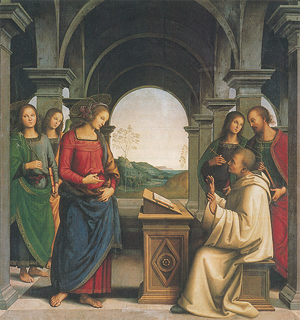
202 Perugino, La Virgen apareciéndose a san Bernardo, h. 1490-1494. Pintura de altar; óleo sobre tabla, 173 x 170 cm; Antigua Pinacoteca, Munich.
En esta atmósfera fue en la que se educó el joven Rafael, dominando y asimilando rápidamente el estilo de su maestro. Al llegar a Florencia tuvo que enfrentarse con una ardua rivalidad: Leonardo y Miguel Ángel; uno, mayor que él en treinta y un años, y el otro, en ocho, estaban creando nuevas concepciones artísticas jamás soñadas anteriormente. Otros jóvenes artistas se habrían desalentado ante la reputación de estos gigantes. Rafael, no. Estaba decidido a aprender. Debió darse cuenta de que esto suponía, en ciertos aspectos, una desventaja. No poseía la vastedad enorme de conocimientos de Leonardo ni la fuerza de Miguel Ángel; pero mientras que estos dos genios eran intratables, esquivos e inabordables para el mortal corriente, Rafael fue de una dulzura de carácter que le recomendaría por sí sola a los mecenas más influyentes. Además, podía pintar, y hacerlo hasta que consiguiera ponerse a la altura de aquellos maestros de más edad.
Las mejores obras de Rafael parecen realizadas tan sin esfuerzo que no se puede relacionar con ellas la idea de una labor dura y obstinada. Para muchos, Rafael es solamente el pintor de esas dulces madonas que han llegado a ser tan conocidas como escasamente apreciadas en sí, esto es, pictóricamente. La imagen de la Virgen según Rafael ha sido adoptada por las generaciones siguientes del mismo modo que la concepción del Dios según Miguel Ángel. Vemos reproducciones baratas de estas obras en humildes habitaciones, y concluimos fácilmente en que cuadros que obtienen tan general asentimiento deben ser, con toda seguridad, un poco vulgares. De hecho, su aparente sencillez es hija de un profundo pensamiento, una esmerada concepción y una sabiduría artística inmensa (ilustraciones 17 y 18). Una obra como Madonna del Granduca (ilustración 203) es verdaderamente clásica en el sentido de que ha servido a incontables generaciones como canon de perfección, lo mismo que las de Fidias y Praxíteles. No requiere ninguna explicación, y en este sentido es realmente vulgar. Pero si se la compara con las innumerables representaciones del mismo tema derivado de ella, advertimos que todas han estado tanteando la gran sencillez conseguida por Rafael. Podemos ver lo que Rafael debe a la serena belleza de los tipos de Perugino; pero ¡qué diferencia entre la superficial simetría del maestro y la plenitud de vida del discípulo! La manera del modelado del rostro de la Virgen fundiéndose con la sombra, la manera de hacernos sentir Rafael el volumen del cuerpo envuelto airosamente en el manto que cae con soltura desde los hombros, la firmeza y ternura con que ella sostiene al Cristo niño, todo contribuye a producir una sensación de equilibrio perfecto. Percibimos que la alteración del más ligero detalle rompería la armonía del conjunto. Y sin embargo, no hay nada forzado ni artificioso en la composición. Parece como si no pudiera ser de otro modo, como si hubiera sido así eternamente.
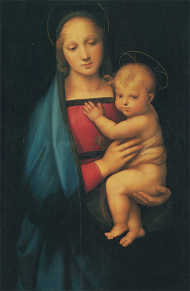
203 Rafael, Madonna del Granduca, h. 1505. Óleo sobre tabla, 84 x 55 cm; Palacio Pitti, Florencia.
Tras pasar algunos años en Florencia, Rafael se fue a Roma. Probablemente llegó allí en 1508, en la época en que Miguel Ángel acababa de iniciar su tarea en la Capilla Sixtina. Julio II también encontró en seguida trabajo para este joven artista; le encargó que decorara las paredes de varias salas del Vaticano que habían de ser conocidas con el nombre de stanze, estancias. Rafael demostró su maestría del dibujo perfecto y de la composición armónica en una serie de frescos en las paredes y los techos de esas estancias. Para apreciar toda la belleza de esas obras se debe pasar algún tiempo en las salas y sentir la armonía y variedad del plan de conjunto, en el que unos movimientos se corresponden con otros y unas formas con otras. Sacadas de su sitio y reducidas a menor tamaño propenden a parecer frías, pues las figuras aisladas, de tamaño natural, que se hallan frente a nosotros cuando contemplamos los frescos, son absorbidas demasiado fácilmente por los grupos. Por el contrario, cuando extraemos esas figuras de su contexto, para que sirvan de ilustraciones de detalle, pierden una de sus principales funciones: la de formar parte de la grandiosa melodía de la composición total.
Esto no afecta tanto a un fresco de menores dimensiones (ilustración 204) que pintó Rafael en la villa de un rico banquero, Agostino Chigi (ahora llamada Villa Farnesina). Como tema eligió el de unos versos de un poema del florentino Angelo Poliziano, que también inspiró El nacimiento de Venus de Botticelli. Esos versos describen la escena en que el tosco gigante Polifemo ensalza con una canción de amor a Galatea, la hermosa ninfa del mar, y cómo cabalga ésta sobre las olas en una carroza tirada por dos delfines burlándose de su rústica canción, mientras el alegre séquito de otras ninfas y dioses del mar se arremolina en torno a ella. El fresco de Rafael representa a Galatea con sus alegres compañeros. El cuadro del gigante tenía que figurar en otro lugar de la sala. Por mucho que se mire esta amable y deliciosa pintura, siempre se descubrirán nuevas bellezas en su rica e intrincada composición. Cada figura parece corresponder a alguna otra, y cada movimiento responde a un contramovimiento. Hemos observado este método en la obra de Pollaiuolo (ilustración 171). Pero cuán rígida y torpe parece su solución al compararla con la de Rafael, empezando por los pequeños cupidos que dirigen sus arcos y flechas al corazón de la ninfa; no solamente el de la derecha de la parte superior corresponde al de la izquierda, sino que el que se desliza delante del carro hace lo propio con el que vuela en el punto más alto de la pintura. Lo mismo sucede con el grupo de dioses marinos que parecen girar en torno a la ninfa. Hay dos en las márgenes, que soplan en sus caracolas, y unas parejas, en primer término y más atrás, que están haciendo el amor. Pero lo más admirable es que todos estos diversos movimientos se reflejan y coinciden en la figura de Galatea. Su carroza ha sido conducida de izquierda a derecha ondeando hacia atrás el manto de la ninfa, pero ésta, al escuchar la extraña canción de amor, se vuelve sonriendo, y todas las líneas del cuadro, desde las flechas de los amorcillos hasta las riendas que ella sostiene en sus manos, convergen en su hermoso rostro, en el centro mismo de la composición. Por medio de estos recursos artísticos Rafael consiguió un movimiento incesante en todo el cuadro, sin dejar que éste se desequilibre o adquiera rigidez. Los artistas han admirado siempre a Rafael por esta suprema maestría en la disposición de las figuras, así como por su consumada destreza en la composición. Del mismo modo que se consideró que Miguel Ángel había alcanzado la más alta cima en el dominio del cuerpo humano, se vio en Rafael la realización de lo que la generación precedente trató con tanto ahínco de conseguir: la composición armónica y perfecta con figuras moviéndose libremente.
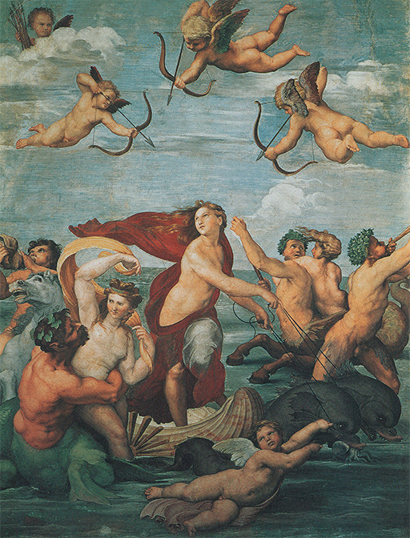
204 Rafael, La ninfa Galatea, h. 1512-1514. Fresco, 295 x 225 cm; Villa Farnesina, Roma.
Existe otra cualidad en las obras de Rafael que fue admirada por sus contemporáneos y por las generaciones subsiguientes: la singular belleza de sus figuras. Cuando concluyó La ninfa Galatea, un cortesano preguntó a Rafael dónde había podido encontrar el modelo para una belleza semejante. El artista respondió que no copiaba ningún modelo específico, sino que seguía «una cierta idea» que se había formado en su mente. En cierto modo, pues, Rafael, como su maestro Perugino, abandonó la fiel reproducción de la naturaleza que había sido la ambición de tantos artistas del Quattrocento, para emplear deliberadamente un tipo imaginario de belleza constante. Si retrocedemos a la época de Praxíteles (ilustración 62), recordaremos cómo lo que nosotros llamamos una belleza ideal surgió de una lenta aproximación a las formas esquemáticas de la naturaleza. Ahora, el proceso se invertía. Los artistas trataban de aproximar la naturaleza a la idea de belleza que se habían formado contemplando las estatuas clásicas, esto es, idealizaron el modelo. No estuvo exenta de peligros esta tendencia, pues si el artista «mejoraba» deliberadamente la naturaleza, su obra podía parecer amanerada o insípida. Pero si contemplamos nuevamente la obra de Rafael, observaremos que de cualquier modo podía idealizar sin que el resultado perdiera nada de su sinceridad y animación. No hay nada fríamente calculado o esquemático en el encanto de Galatea, moradora de un mundo radiante de amor y de belleza: el mundo de los clásicos, tal como fue visto por sus admiradores italianos del siglo XVI.
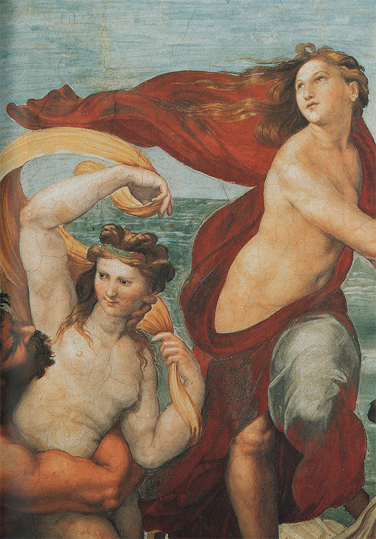
205 Detalle de la ilustración 204.
Este es el logro que ha hecho famoso a Rafael a través de los siglos. Quizá los que relacionan su nombre únicamente con bellas madonas y figuras idealizadas del mundo clásico se sorprenderían si vieran el retrato que le hizo a su gran mecenas, el papa León X, de la familia Médicis, en compañía de dos cardenales (ilustración 206). No hay idealización alguna en la cabeza ligeramente hinchada del Papa, corto de vista, que acaba de examinar un antiguo manuscrito (hasta cierto punto similar en estilo y época al Salterio de la reina María [ilustración 140]). Los terciopelos y damascos, en sus ricas tonalidades, ayudan a crear un ambiente de pompa y poder, pero uno bien puede figurarse que estos hombres no se sienten cómodos. Aquéllos eran tiempos difíciles. Recordemos que exactamente en la misma época en que fue pintado este retrato, Lutero había atacado al Papa por el modo en que reunía fondos para el nuevo San Pedro. Y resulta que fue al propio Rafael a quien León X puso al frente de la construcción de este edificio tras la muerte de Bramante, en 1514, con lo que se convirtió también en arquitecto, proyectando iglesias, villas y palacios, y estudiando las ruinas de la antigua Roma. Pero a diferencia de su gran rival, Miguel Ángel, Rafael se llevaba bien con la gente y era capaz de mantener en funcionamiento un taller de gran actividad. Gracias a su sociabilidad, los eruditos y dignatarios de la corte papal le aceptaron como uno de ellos. Se hablaba incluso de que iba a ser nombrado cardenal cuando le sobrevino la muerte en su trigesimoséptimo aniversario, casi tan joven como Mozart, habiendo acumulado en su breve vida una asombrosa diversidad de logros artísticos. Uno de los eruditos más famosos de su época, el cardenal Bembo, escribió el epitafio de su tumba en el Panteón de Roma:
Esta es la tumba de Rafael; quien en vida hizo que la madre naturaleza temiera ser vencida por él, y a cuya muerte, que también temiera morir.
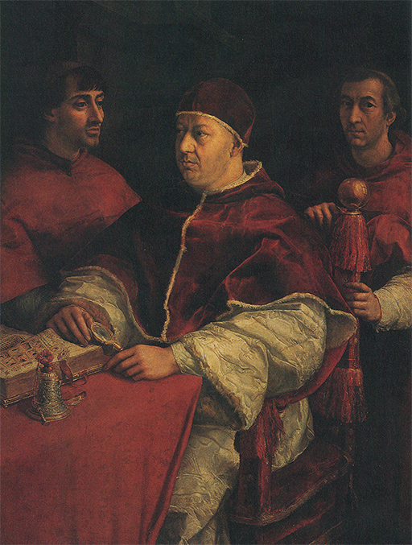
206 Rafael, El papa León X con dos cardenales, 1518. Óleo sobre tabla, 154 x 119 cm; Galería de los Uffizi, Florencia.

Miembros del taller de Rafael enyesando, pintando y decorando las Loggie, h. 1518. Relieve en estuco; Loggie, Vaticano.